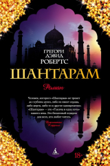
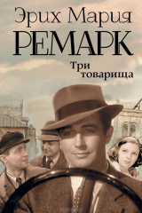
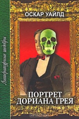
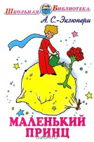

-
1

451° по Фаренгейту
Рэй Брэдбери
Мастер мирового масштаба, совмещающий в литературе несовместимое. Создатель таких ярчайших шедевров, как "Марсианские хроники", "451° по Фаренгейту"
-
2

1984
Джордж Оруэлл
Своеобразный антипод второй великой антиутопии XX века - "О дивный новый мир" Олдоса Хаксли. Что, в сущности, страшнее: доведенное до абсурда "общество потребления"
-
3

Мастер и Маргарита
Михаил Булгаков
Один из самых загадочных и удивительных романов XX века. «Мастер и Маргарита» – визитная карточка Михаила Булгакова. Более десяти лет он работал над
-
4
Шантарам
Грегори Дэвид Робертс
Представляем читателю один из самых поразительных романов начала XXI века (в 2015 году получивший долгожданное продолжение – «Тень горы»). Эта преломленная в.
-
5
Три товарища
Эрих Мария Ремарк
Трое друзей - Робби, отчаянный автогонщик Кестер и "последний романтик" Ленц прошли Первую мировую войну. Вернувшись в гражданскую жизнь, они основали
-
6

Цветы для Элджернона
Дэниел Киз
Сорок лет назад это считалось фантастикой. Сорок лет назад это читалось как фантастика. Исследующая и расширяющая границы жанра, жадно впитывающая
-
7
Портрет Дориана Грея
Оскар Уайльд
«Портрет Дориана Грея» – одно из величайших произведений последних полутора столетий, роман, который пытались запретить, а автора осуждали за
-
8
Маленький принц
Антуан де Сент-Экзюпери
«Маленький принц» — аллегорическая повесть, наиболее известное произведение Антуана де Сент-Экзюпери. Рисунки в книге выполнены самим автором и не мене
-
9

Над пропастью во ржи
Джером Д. Сэлинджер
Писатель-классик, писатель-загадка, на пике своей карьеры объявивший об уходе из литературы и поселившийся вдали от мирских соблазнов в глухой
-
10

Вино из одуванчиков
Рэй Брэдбери
Войдите в светлый мир двенадцатилетнего мальчика и проживите с ним одно лето, наполненное событиями радостными и печальными, загадочными и тревожными